Saiba antes de a água chegar.
O Alaga Não cruza a previsão de chuva com os pontos que mais alagam em Louveira e região e avisa o morador no celular, antes da rua encher — com o que fazer e por onde ir.

Quem é o cidadão
Moradores de bairros baixos e próximos a rios e córregos de Louveira, Jundiaí, Vinhedo, Itupeva e Valinhos: famílias que perdem móveis e documentos, trabalhadores que ficam presos no trânsito alagado, idosos que não conseguem sair de casa a tempo e pequenos produtores rurais que dependem de estradas de terra.
O problema
As chuvas de verão chegam rápido e muito fortes. Hoje, a maior parte dos moradores só descobre que a rua alagou quando a água já está na porta. Os avisos existentes são gerais para a cidade toda e não dizem qual rua está em risco nem o que fazer.
de brasileiros moravam em áreas de risco de enchentes e deslizamentos, em 872 municípios monitorados.
Fonte: IBGE e Cemaden, População em áreas de risco no Brasil (abre em nova aba) (dados do Censo 2010).
foi o volume de chuva registrado em Jundiaí num único temporal, com pontos de alagamento em vários bairros e casas interditadas.
Fonte: Defesa Civil de Jundiaí com dados do Cemaden, via Tribuna de Jundiaí (abre em nova aba).
Nossa proposta
Mapeia
Reúne os pontos que mais alagam em cada bairro, com dados da Defesa Civil e relatos dos moradores.
Cruza
Compara a chuva prevista (mm por hora) com o limite em que cada ponto costuma alagar.
Avisa
Envia alerta por SMS ou WhatsApp só para quem mora ou passa perto do ponto em risco.
Orienta
Diz o que fazer: subir móveis, evitar a rua, onde é o abrigo mais próximo.
ODS da ONU ligados à solução
- ODS 11 — Cidades e comunidades sustentáveis: reduz pessoas afetadas e perdas causadas por desastres com água.
- ODS 13 — Ação contra a mudança do clima: fortalece a adaptação a chuvas extremas com alerta precoce.
- ODS 3 — Saúde e bem-estar: evita afogamentos, acidentes e doenças como a leptospirose.
- ODS 10 — Redução das desigualdades: prioriza bairros mais vulneráveis e funciona até por SMS, sem internet.